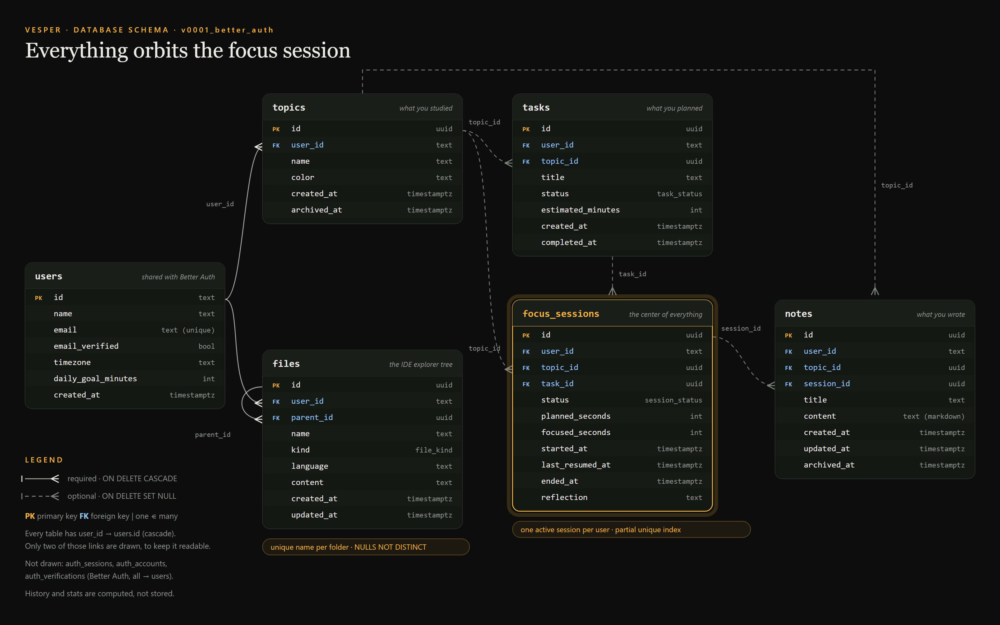

How we are building Vesper (born as FocusOrbit), step by step: what we built, the options we had, and why we chose each approach.
docs/journal/.
Before writing any code, we reduced the product to one sentence. Every later decision is checked against it.
The first version had four separate screens: a dashboard, an IDE, a notes app and a landing page. Each one looked good on its own but knew nothing about the others. The new direction is one workspace:
Left: files, notes and history. Center: a split editor where a note is just another tab. Right: the focus hub.
The first version was a well-designed shell with no logic behind it. Before building anything new, we read the code and listed what was actually wrong.
| Finding | Why it happens | Lesson |
|---|---|---|
| Two layouts stacked Double sidebar, clipped "Deep Focus" label | IdeWorkspace.tsx renders its own fixed header and sidebar, and workspace/layout.tsx already renders Sidebar and TopNav. | Only one component should own the page shell. |
| The timer dies when you switch views | The setInterval lives inside the IDE component. When the view changes, the component unmounts and the interval is cleared. | Long-lived state must not live in a component that can disappear. |
| The timer drifts | It subtracts 1 every second, but browsers slow down timers in background tabs, so 25 minutes can become 27 or more. | Store endsAt and calculate remaining = endsAt − now. |
| All data is fake | The tasks, the "72%", the "42h" and the file tree are hardcoded. | Decide what the app remembers before you build more screens. |
Eight steps. Each one is small enough to finish and teaches one idea.
| # | Step | What you learn | Status |
|---|---|---|---|
| 1 | Database & schema | Designing the data first; relational modelling; constraints | Done |
| 1b | Docker for Postgres | Images, containers, ports, volumes | Done |
| 2 | A correct timer, computed from timestamps | Source of truth vs. derived state; component lifecycle | Done |
| 3 | Server actions: start / pause / resume / finish a session | Server vs. client code; data mutations; auth checks | Done |
| 4 | One layout shell | Layout composition; removing duplicate UI | Done |
| 5 | Notes as editor tabs, with a split view | One abstraction for different content types | Planned (IDE-2) |
| 6 | History view & stats | Calculating numbers from data (SQL aggregation) | Done |
| 7 | Design tokens & the premium visual pass | Design systems | Done |
| 8 | Our own auth with Better Auth | Password hashing, session cookies, route protection | Done |
| 9 | Tracking: tasks, topics, wrap-up | Joining data; state machines in the UI | Done |
| 10 | Landing page | Honest marketing with real tokens | Done |
| 11 | IDE-1: real files in Postgres | Recursive SQL, autosave, optimistic concurrency | Next |
The original plan started with the timer. We changed the order to database first. The next chapter explains why that was the better call.
A screen is a view of some data. If you don't know the data, every screen is a guess.
Take the one-sentence idea and underline the nouns. Each important noun becomes a table:
| In the idea | Table | Note |
|---|---|---|
| you | users | Identity comes from Clerk |
| what you studied | topics | The label that ties everything together |
| what you planned | tasks | Optional link to a topic |
| a timed block of focus | focus_sessions | The center |
| what you wrote | notes | Can be written during a session |
| the code you wrote | files | A folder tree |
| history, motivation | none | Calculated from sessions, not stored |
Three decisions: where the backend lives, which database to use, and how the code talks to it.
postgres driver..sql files you can read. You learn SQL instead of hiding from it.docker-compose.yml) describes the exact Postgres version and settings. It's the same on every machine, easy to reset, and a skill you'll use in every backend job. See chapter 09.Six tables. Everything else is calculated from them.

Solid lines are required and cascade on delete. Dashed lines are optional and become NULL when the parent is deleted. The file docs/schema.png is generated by docs/guide/schema-diagram.mjs.
| Table | Purpose | Notable columns |
|---|---|---|
users | Your preferences. The id is the Clerk user id. | timezone, daily_goal_minutes |
topics | What you studied (e.g. "Clean Architecture"). | unique (user_id, name) |
tasks | What you planned to do. | status: todo / in_progress / done |
focus_sessions | One timed block of focus. The center of the schema. | focused_seconds, last_resumed_at, reflection |
notes | Markdown notes, optionally linked to a session and a topic. | content, archived_at |
files | The IDE's folder tree. | parent_id → files.id |
The rules we chose, with the reason for each.
users.id is the Clerk user id. We don't copy the email, name or avatar.streak, total_hours or progress columns. They are queries over focus_sessions.focused_seconds + last_resumed_at fully describe a pausable timer.// resume last_resumed_at = now // pause focused_seconds += now − last_resumed_at ; last_resumed_at = null // live focused time, at any moment focused_seconds + (now − last_resumed_at)
| Rule | How Postgres enforces it |
|---|---|
| One active session per user | Partial unique index on user_id WHERE status IN ('running','paused') |
| Planned time is positive | CHECK (planned_seconds > 0) |
| Folders have no content | CHECK (kind = 'file' OR content IS NULL) |
| No duplicate names in a folder, including the root | UNIQUE NULLS NOT DISTINCT (user_id, parent_id, name) |
UPDATE. Reading a whole tree needs WITH RECURSIVE, which we'll learn when we build the explorer.timestamptz. The user's timezone is used only to decide what "today" means.A migration is a numbered SQL file that moves the database from one version to the next. Migrations are to the database what commits are to code.
# 1. change the TypeScript schema src/db/schema.ts # 2. Drizzle compares it with the last snapshot and writes the SQL npm run db:generate -- --name add_something → drizzle/0001_add_something.sql # 3. READ the SQL. Never apply a migration you haven't read. # 4. apply it npm run db:migrate
CREATE UNIQUE INDEX "focus_sessions_one_active_per_user" ON "focus_sessions" USING btree ("user_id") WHERE "focus_sessions"."status" in ('running', 'paused'); CONSTRAINT "files_sibling_name_unique" UNIQUE NULLS NOT DISTINCT("user_id","parent_id","name")
Docker runs Postgres in an isolated box that is described by one file, can be recreated at any time, and is the same on every machine.
postgres:17-alpine: Postgres 17 on a tiny Linux.focusorbit-db. It's disposable.5433:5432 means your PC's port 5433 leads to Postgres's 5432 inside the container. We use 5433 so it can't clash with a native Postgres.pgdata holds your tables. down keeps it; down -v deletes it.services: db: image: postgres:17-alpine environment: { POSTGRES_USER: focusorbit, POSTGRES_PASSWORD: focusorbit, POSTGRES_DB: focusorbit } ports: [ "5433:5432" ] # host:container volumes: [ pgdata:/var/lib/postgresql/data ] # data survives restarts healthcheck: { test: pg_isready ... } # "is Postgres ready yet?"
Docker Desktop was installed, but docker run hello-world failed with "Docker Desktop is unable to start". Instead of guessing, we read Docker's own log file:
| Check | Result | Meaning |
|---|---|---|
| Virtualization in the BIOS | Enabled ✓ | The hardware is fine |
wsl command | Printed only the old usage text | The WSL 2 feature isn't installed |
| Docker engine | Not running | It needs WSL 2 to run Linux containers |
| # | Action | What we saw |
|---|---|---|
| 1 | Enable the Windows features (admin):dism … Microsoft-Windows-Subsystem-Linuxdism … VirtualMachinePlatform | Exit code 3010: success, restart required |
| 2 | Restart with Start → Power → Restart (on Windows 10, "Shut down" uses Fast Startup and may not apply new features) | HypervisorPresent changed from False to True |
| 3 | wsl --update --web-download (admin) | The built-in wsl.exe was replaced by WSL 2.7.14 |
| 4 | Start Docker Desktop | Engine up in 15 s · hello-world ✓ |
| 5 | db:up → db:migrate → db:seed | Healthy in 8 s · 6 tables · demo data ✓ |
A mistake worth keeping: we first tried wsl --install --web-download, but that option belongs to --update. Reading the tool's own help text showed the right command.
A rule you haven't tried to break is a rule you haven't tested. We attacked the database on purpose:
| Attempt | Result |
|---|---|
| A second running session for the same user | ❌ focus_sessions_one_active_per_user |
planned_seconds = 0 | ❌ focus_sessions_planned_positive |
A duplicate src folder at the root | ❌ files_sibling_name_unique (NULLS NOT DISTINCT) |
| A folder with content | ❌ files_folder_has_no_content |
Lessons: when a tool fails with a vague message, find its log, because the real reason is usually written down. And when the docs and your memory disagree, trust --help.
The old timer was a number counted down by setInterval. It drifted, died when you switched views, and saved nothing. Now the timer is a row in the database, and the browser only draws it.
Browser Server Database FocusTimer ─ useFocusSession ──▶ 'use server' actions ──▶ DAL (server-only) ──▶ focus_sessions ▲ (who is calling?) (is it yours? valid move?) now(), constraints └──── SessionDTO + serverNow ◀─────────────────────────────────────────────┘ session-clock.ts ← pure math shared by both sides
| Layer | Job | Why separate |
|---|---|---|
lib/session-clock.ts | focused / remaining / progress from timestamps | No I/O, so it's trivially testable and shared |
data/sessions.ts | Every query, scoped by user_id | One place for authorization; can't reach the browser |
app/actions/sessions.ts | Check the user, delegate, return a small result | Actions are public endpoints, so they stay thin and easy to audit |
useFocusSession, FocusTimer | Call actions, render the ring | UI stays out of the data layer |
focused = banked + (now − lastResumedAt), calculated on every render.now(). Actions return serverNow from the database, and the browser stores offset = serverNow − Date.now().WHERE clause… WHERE id = $1 AND user_id = $2 AND status = 'running' RETURNING *requireUserId(). Every DAL query includes user_id = $userId, and client-supplied topicId and taskId are checked for ownership.| Test | What it proves |
|---|---|
| Full lifecycle | start → pause (+90 s) → resume → finish (+30 s) = exactly 120 s, with the reflection saved |
| One active session | A second start fails with ALREADY_ACTIVE, other users are unaffected, and ending a session frees the slot |
| Invalid transitions | You can't pause twice, resume a running session, or end a session twice |
| Authorization | Bob can't pause or end Alice's session, or start one with her topic |
| Input validation | Bad durations, non-UUID ids, SQL-injection-shaped strings and null input are all rejected |
| Clock math (6 unit tests) | Drift-proof, paused time stays frozen, never negative, capped at 100% |
last_resumed_at = now() − 90 s, so they're instant and exact.--conditions=react-server makes import 'server-only' resolve to an empty module in tests, so the DAL is testable without weakening its protection inside Next.js.Also in this step: middleware.ts was renamed to proxy.ts (a Next.js 16 deprecation), and next build passes.
FocusOrbit looked like many dashboards: green gradients, glows, uppercase labels everywhere. We rebranded the product and rebuilt the workspace as one shell.
Each direction had a name, palette, type, logo mark and the same workspace screen, so the comparison was about the brand and not the layout.
| A · Lumen | B · Stillwater | C · Vesper ✓ | |
|---|---|---|---|
| Feel | Warm editorial dark | Light, Nordic, paper | Midnight precision |
| Accent | Ember #E58A52 | Deep teal #2E6B63 | Signal amber #F2B544 |
| Type | Fraunces + Instrument Sans | Newsreader + Hanken Grotesk | Sora + Manrope + JetBrains Mono |
--color-primary was both #4edea3 and var(--primary)), and there were about 120 hardcoded hex values.globals.css: canvas · panel · raised · line, ink · ink-muted · ink-faint, and signal. Components write bg-panel text-ink-muted, never a hex value.primary were avoided because the old systems already used them.--color-surface-container-low: var(--color-panel), plus a one-off script that mapped the ~10 distinct hardcoded colors to token utilities.workspace/layout.tsx now adds nothing. WorkspaceShell draws the header, rail, side panel, editor, focus hub and status bar. The old Sidebar, TopNav and MobileNav were deleted.hidden. Monaco uses automaticLayout to resize when shown again.npm test 13/13 · tsc clean · next build ✓. Not yet seen in a browser: Clerk has no keys in this project, so production refuses to start and dev mode failed to load Clerk's scripts (see chapter 14).Three things at once: we replaced Clerk with our own auth, made the timer track what the time was for, and built the page people see before they sign up.
Sign up users row + auth_accounts row (provider "credential", password = scrypt HASH) auth_sessions row with a random token → sent as an httpOnly cookie Request cookie → find auth_sessions by token → not expired? → that's the user Sign out delete the auth_sessions row + clear the cookie
| Design choice | Why |
|---|---|
Map Better Auth's user onto our users table | One user id for auth and tasks/sessions. The other tables are prefixed auth_ to avoid a name clash with focus sessions. |
Two gates: proxy.ts + getCurrentUser() | The proxy is a fast "is there a cookie?" redirect. The real check (valid, unexpired) runs in the page and in every Server Action. |
safeNext on ?next= | Blocks open redirects like //evil.com after login. |
| Validate the timezone at sign-up | An invalid timezone would break every date query later, so it falls back to UTC. |
| Sign-out does a full page load | Wipes all in-memory state, so the next person on that browser never sees your data. |
drizzle-kit generated ADD COLUMN "email" text NOT NULL, which fails on existing rows. The fix is a classic pattern: add the column nullable → backfill → SET NOT NULL. Chapter 08's rule paid off: read every migration before applying it.| Piece | How it works |
|---|---|
| Setup | Pick a task (its topic is pre-filled) or create one inline, choose 25, 50 or 90 minutes. |
| Time's up | The session is paused, not ended, so the wrap-up can still capture your reflection. The wrap-up is derived ("paused with 0 left"), not stored. |
| Task states | todo → in progress (a session starts on it) → done (wrap-up or checkbox). Starting never downgrades a finished task. |
| History | Calculated from sessions and grouped by local day with AT TIME ZONE. |
| Streak | Consecutive local days with a completed session; today stays "alive" until midnight. A pure function, tested across month and year boundaries. |
32 tests, including Better Auth on our real tables: the password is stored hashed, a wrong password is rejected, and a duplicate email is refused. Then an end-to-end run in a real (headless) browser: sign in → pick a task → start → reload the page, the timer keeps running → wrap up → the database shows completed / done and History shows the session with its reflection.
"We have an editor on screen. How does it become an IDE?" An IDE is four layers, and each one is its own decision.
4. RUN execute code, show output (hardest, most dangerous) 3. UNDERSTAND autocomplete, errors, go-to-definition 2. STORE where files live: save, load, the tree 1. EDIT text, colors, cursor ✓ Monaco
files table · B. Browser storage (OPFS/IndexedDB) · C. A folder on your disk (File System Access API) · D. Git/GitHubWITH RECURSIVE query.UPDATE … WHERE id = $id AND updated_at = $whatILoaded. Zero rows means someone saved first, so we warn instead of overwriting (optimistic concurrency).docker-compose.yml with a 5 s timeout, capped memory and no network.| Phase | What you get | What you learn |
|---|---|---|
| IDE-1 | Real files: tree from Postgres, open, create, rename, delete, autosave | Recursive SQL, debouncing, optimistic concurrency |
| IDE-2 | Notes saved to the notes table, linked to the session | Reusing one save pattern |
| IDE-3 | ▶ Run JS/TS in a sandbox, with a console panel | iframes, postMessage, sandboxing |
| IDE-4 | Multi-language runner in Docker | Isolation, resource limits, untrusted input |
| IDE-5 | (Optional) GitHub import, language servers | OAuth, WebSockets, protocols |
| File | What it does |
|---|---|
src/db/schema.ts | The tables, written in TypeScript. The source of truth for the database. |
src/db/index.ts | The database connection. Marked server-only so it can never reach the browser, and cached on globalThis so hot reload doesn't open a new pool on every save. |
src/db/seed.ts | Creates a demo user with topics, a task, a session, a note and files. |
drizzle/0000_init.sql | The first migration: the SQL that builds everything. |
drizzle.config.ts | Tells drizzle-kit where the schema and the database are. It loads .env.local through @next/env, as the Next.js docs recommend. |
docker-compose.yml | The Postgres container. |
.env.local / .env.example | The database URL. .env.local is gitignored; the example is committed. |
src/lib/session-clock.ts | Pure timer math shared by the server and the browser. |
src/data/ | The Data Access Layer: auth.ts (who is calling) and sessions.ts (every session query). |
src/app/actions/sessions.ts | The Server Actions the UI calls. |
src/hooks/useFocusSession.ts | Calls the actions, syncs the clock, re-syncs when the tab becomes visible. |
src/app/globals.css | The Vesper design tokens (and temporary legacy aliases). |
src/components/workspace/ | The single workspace: WorkspaceShell, FileTree, CodePane (Vesper Monaco theme), NotePane, FocusHub, VesperMark. |
src/lib/auth.ts, auth-client.ts | Better Auth on the server (tables, password rules, hooks) and in the browser (sign in/up/out). |
src/app/api/auth/[...all] | Every auth endpoint: /api/auth/sign-in/email, /sign-out … |
src/app/(auth)/ | The /sign-in and /sign-up pages. |
src/data/tasks.ts, history.ts | Tasks, topics, history and today's stats; everything scoped by user. |
src/data/run-action.ts | The shared "check user → run → map errors" wrapper every Server Action uses. |
src/proxy.ts | Fast cookie check that sends signed-out visitors to /sign-in (formerly middleware.ts). |
docs/journal/ | Short Markdown entries, one per step. |
docs/guide/ | The source of this PDF and the schema diagram. |
npm run db:up # start Postgres (Docker) npm run db:migrate # apply migrations npm run db:seed # demo account: demo@vesper.dev / vesper-demo-123 npm run db:studio # browse tables in the browser npm run db:generate # write a new migration after a schema change npm run db:down # stop Postgres (data is kept) npm test # unit + database tests (needs db:up)
| Primary key (PK) | The column that uniquely identifies a row, e.g. id. |
| Foreign key (FK) | A column that points to a row in another table. Postgres refuses values that point to nothing. |
| Constraint | A rule the database enforces on every write: NOT NULL, UNIQUE, CHECK, FK. |
| Index | A lookup structure that makes queries fast. A unique index also forbids duplicates. |
| Partial index | An index over only the rows that match a WHERE clause. |
| Enum | A type with a fixed list of values, e.g. session_status. |
| Cascade / Set null | What happens to child rows when their parent is deleted. |
| Adjacency list | A tree stored as rows that each point to their parent. |
| timestamptz | A moment in time, stored in UTC and converted for display. |
| ORM | A library that maps tables to code. Ours is Drizzle. |
| Migration | A versioned SQL file that changes the database schema. |
| Seed | A script that fills the database with sample data. |
| Derived state | A value calculated from other data instead of stored on its own. |
| YAGNI | "You Aren't Gonna Need It": don't build a feature before it's needed. |
| Image / Container / Volume | Docker's template, running instance, and persistent storage. |
| Server Action | An async function marked 'use server' that the browser can call. Under the hood it's a POST request. |
| Data Access Layer (DAL) | The only code allowed to touch the database. It is server-only and enforces authorization. |
| IDOR | Insecure Direct Object Reference: accessing someone else's data by guessing its id. |
| Race condition | A bug where the result depends on which of two simultaneous actions happens first. |
| Clock offset | The difference between the server's clock and the browser's, used to align them. |
| DTO | Data Transfer Object: the minimal shape of data sent to the client. |
| Design token | A named design decision (a color, font or radius) that components reference instead of raw values. |
| Alias token | An old name pointed at a new token, so code can migrate gradually. |
| WCAG contrast | The readability ratio between text and background. Body text needs at least 4.5:1. |
| Password hash (scrypt) | A one-way scramble of a password. The server can check a guess but can never read the original. |
| Session cookie (httpOnly) | A random token the browser sends on every request; httpOnly means page scripts can't read it. |
| Open redirect | A link that sends a user to another site after a trusted action, like login. |
| Optimistic concurrency | Save only if the data is unchanged since you loaded it; otherwise warn instead of overwriting. |
| Debounce | Wait until the user pauses (e.g. 1 s) before acting, so typing doesn't trigger a save per key. |
| LSP | Language Server Protocol: how editors get autocomplete and errors from a language-specific server. |
| Sandbox | An isolated place to run untrusted code, so it can't touch anything else. |
| WSL 2 | Windows Subsystem for Linux, the Linux kernel Docker Desktop runs on. |
This guide will grow one chapter at a time.
files table, with autosave and optimistic concurrency (chapter 13).